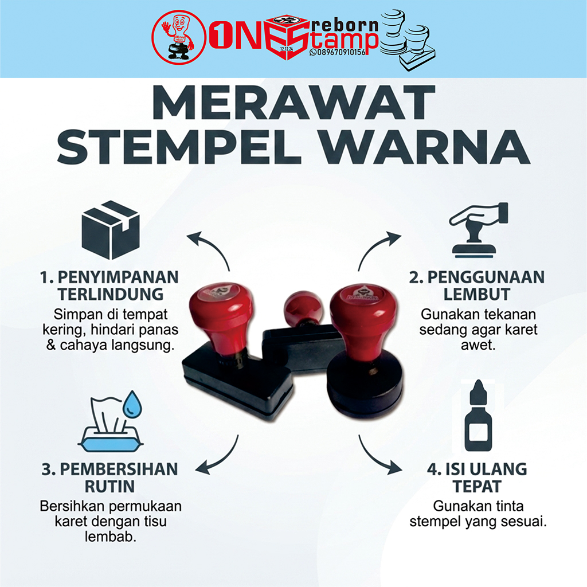

Tips Merawat Stempel Agar Tahan Lama
- Jangan menekan stempel terlalu keras saat digunakan.
- Bersihkan stempel setelah digunakan agar tinta tidak mengering.
- Selalu pasang kembali tutup stempel setelah pemakaian.
- Simpan stempel di tempat sejuk dan kering.
- Hindari menyimpan stempel di dashboard mobil atau area bersuhu tinggi.
- Isi ulang tinta sebelum benar-benar habis untuk mencegah karet rusak.
- Gunakan tinta sesuai jenis stempel (Flashstamp tidak boleh tinta pad).
← Kembali ke Beranda